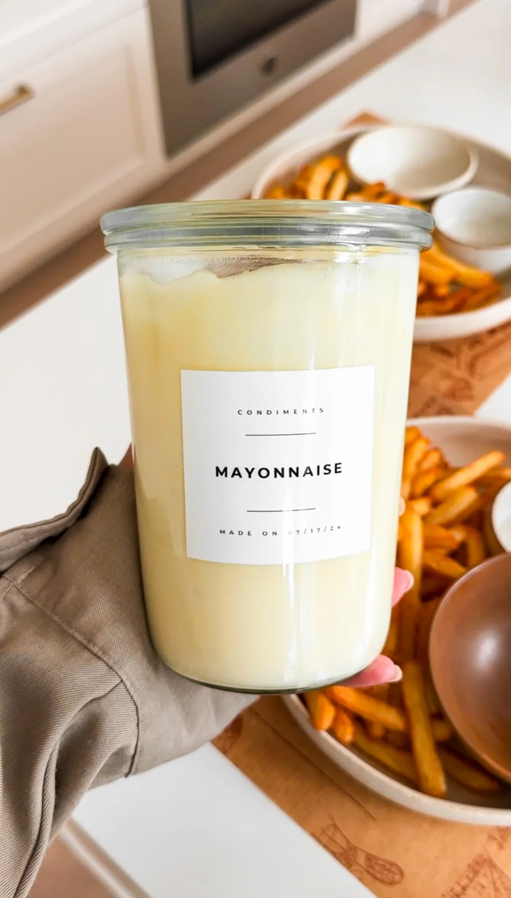

Making your own condiments at home is easier than you think and a
total game-changer, trust me! This homemade ketchup and mayo are
bursting with flavor and completely beat anything you can buy at the
store. You'll love how simple it is to whip up these essentials from
scratch with just a few fresh ingredients and none of the weird
stuff found in ketchup and mayo on the grocery shelves!
Condiments - Ketchup & Mayonnaise
Making your own condiments at home is easier than you think and a
total game-changer, trust me! This homemade ketchup and mayo are
bursting with flavor and completely beat anything you can buy at the
store. You’ll love how simple it is to whip up these essentials from
scratch with just a few fresh ingredients and none of the weird
stuff found in ketchup and mayo on the grocery shelves!
Homemade Ketchup
Let’s start with the ketchup! Begin by combining tomato paste and
water in a medium saucepan. Stir until the paste is fully diluted;
this will form the base of your ketchup. Next, add Worcestershire
sauce, sugar, vinegar, salt, garlic powder, onion powder, paprika,
and cinnamon. Whisk everything together until smooth and
well-blended. The combination of these spices is what gives ketchup
its unique, tangy-sweet flavor.
Place the saucepan over medium heat and bring the mixture to a
simmer. Once it starts to bubble, reduce the heat to low and let it
cook for about 20-30 minutes, stirring occasionally. This simmering
process allows the flavors to meld together beautifully and helps
thicken the ketchup. Once it has thickened to your liking, remove
the saucepan from the heat and let the ketchup cool. Transfer it to
a jar or bottle and pop it in the fridge.
Tips and Tricks: For a smokier flavor, try adding a dash of
smoked paprika or chipotle powder. If you prefer a smoother ketchup,
you can blend it once it has cooled down in a food processor or
blender. Adjust the sweetness by adding more or less sugar according
to your taste. If you like it more acidic, add more vinegar!
Variations: Spicy Ketchup: Add a pinch of cayenne pepper or a
few dashes of hot sauce. Herb-Infused Ketchup: Stir in some finely
chopped
fresh herbs like basil or thyme for a unique twist.

Homemade Mayonnaise
Now, let’s move on to mayonnaise. Making mayo from scratch is
surprisingly easy and the result is so much better than store-bought.
Make sure all your ingredients are at room temperature; this helps the
mayonnaise emulsify properly. In a blender or food processor, combine
the eggs, mustard, vinegar, oil, salt, and lemon juice. Blend on medium
speed until the mixture is smooth, thick, and creamy. That’s it!
The key to a perfect mayo is to add the oil very slowly. This helps the
mixture emulsify and turn into that creamy goodness we all love.
However, since we’re blending all the ingredients at once here, just
ensure you blend it long enough for everything to come together nicely.
I like to use an immersion blender and it never fails to make the most
creamy homemade mayo!
Tips and Tricks: For a lighter mayo, use half vegetable oil and
half olive oil. If you want a tangier mayo, add a bit more lemon juice
or vinegar. To make a richer mayo, you can use only the egg yolks
instead of whole eggs.
Variations: Garlic Mayo: Add a clove of minced garlic to the
blender for a garlicky kick. Herb Mayo: Blend in some fresh herbs like
dill, parsley, or chives for an herbaceous twist. Spicy Mayo: Add a
teaspoon of sriracha or hot sauce for a spicy version.
Storage And Shelf Life
Homemade condiments are best stored in the refrigerator. For
ketchup, once it’s cooled, transfer it to a clean jar or bottle with
a tight-fitting lid. It will keep for up to three weeks in the
fridge. As for mayonnaise, store it in a clean jar as well and use
it within two weeks. Always make sure to use a clean spoon to scoop
out your condiments to avoid contamination and extend their shelf
life.
Making your own condiments at home is not only fun but also allows
you to control the ingredients and flavors. Plus, they taste so much
better than store-bought versions! Give these recipes a try and
enjoy the delicious, fresh taste of homemade ketchup and mayo.
Craving More From Scratch? Try These Recipes Out!
Mozarella Cheese
Homemade Gouda
Butter
Sweet Potato Fries
Homemade Hummus
If you tried this recipe and loved it, drop by down below and let me
know how you liked it with a rating and comment! Feel free to also
leave a question there about this recipe and I’ll get right back to
it.
To see more recipes and behind-the-scenes, follow along on
Instagram and Youtube! I’m also now on
Pinterest pinning away so stop by and see what’s up.
Condiments - Ketchup & Mayonnaise
Making your own condiments at home is easier than you think and a total
game-changer, trust me! This homemade ketchup and mayo are bursting with
flavor and completely beat anything you can buy at the store. You'll
love how simple it is to whip up these essentials from scratch with just
a few fresh ingredients and none of the weird stuff found in ketchup and
mayo on the grocery shelves!
Prep Time: 10 minutes
Cook Time: 20 minutes
Total Time: 30 minutes
Yields 2 cups each
Ingredients
Ketchup
16 ounces tomato paste
1 cup water
1 tablespoon Worcestershire Sauce
1/2 cup sugar, more to taste
1/4 cup honey
1/2 cup distilled white vinegar, more to taste
1 1/2 teaspoon salt
1 teaspoon galic powder
1 teaspoon onion powder
1 1/2 teaspoon paprika
1/4 teaspoon cinnamon
Mayonnaise
2 large eggs
1 tablespoon yellow mustard
2 tablespoons white distilled vinegar
2 cups avocado or vegetable oil
3/4 teaspoon salt
1/2 tablespoon lemon juice
Instructions
Homemade Ketchup
In a medium saucepan, combine the tomato paste, water,
Worcestershire sauce, sugar, honey, vinegar, salt, garlic powder,
onion powder, paprika, and cinnamon.
Whisk all the ingredients together until the mixture is smooth and
well-blended.
Place the saucepan over medium heat and bring the mixture to a
simmer. Once it starts to bubble, reduce the heat to low.
Let the ketchup cook on low heat for about 20-30 minutes, stirring
occasionally. This allows the flavors to meld and the ketchup to
thicken.
Once thickened, remove the saucepan from the heat and let the
ketchup cool. Transfer it to a jar or bottle and refrigerate. It
will keep for up to 3 weeks in the refrigerator.
Optional, blend in a food processor to make extra smooth and then
store it!
Homemade Mayonnaise
Make sure all ingredients are at room temperature. This helps the
mayonnaise emulsify properly.
Using an immersion blender or food processor, combine the eggs,
mustard, vinegar, oil, salt, and lemon juice. Blend on medium speed
until the mixture is smooth, thick, and creamy.
Transfer the mayonnaise to a jar or container and refrigerate. It
will keep for up to 1 to 2 weeks in the refrigerator.